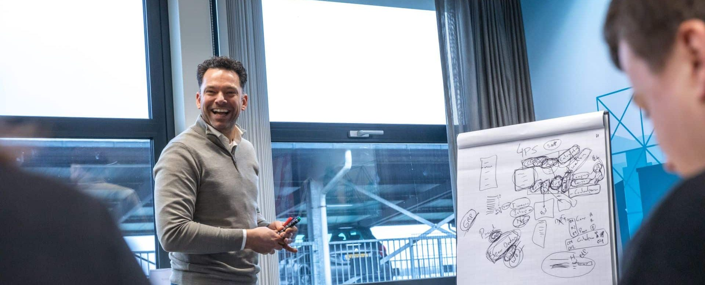
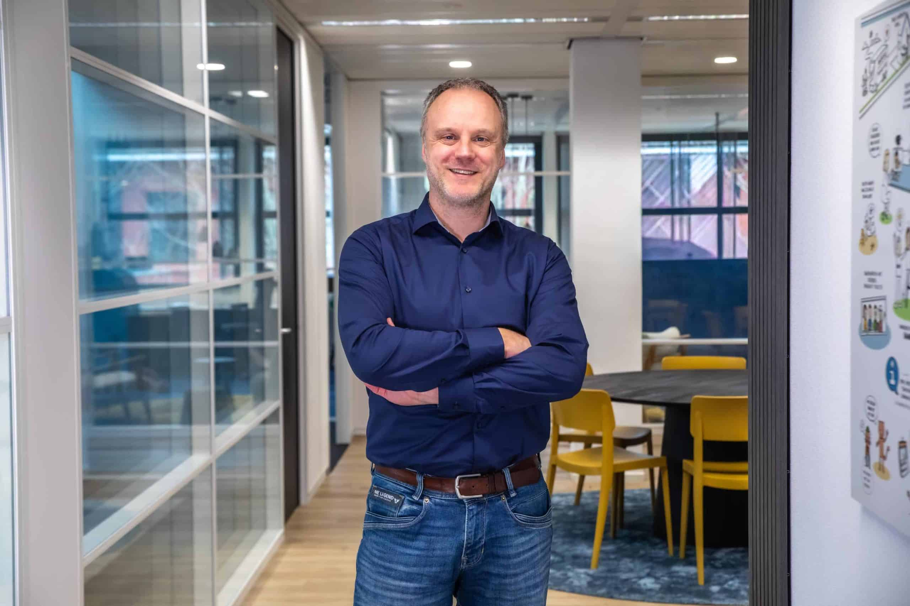

Diensten
Van losse data naar waardevolle inzichten.
Standaardrapportages in Business Central of 4PS Construct schieten vaak tekort als het gaat om dieper inzicht of specifieke stuurinformatie. Rapporten op maat laten bouwen kost veel tijd, en het combineren van data uit verschillende systemen maakt het nóg complexer. De oplossing? Microsoft Power BI.
Met Power BI van DIS Group beschik je over interactieve dashboards en rapportages die automatisch worden geactualiseerd en altijd beschikbaar zijn. Zo wordt data niet alleen inzichtelijk, maar ook direct inzetbaar voor sturing en besluitvorming. Of het nu gaat om projectvoortgang, financiële prestaties of capaciteitsinzet: de juiste informatie op het juiste moment maakt het verschil.
Goede stuurinformatie ondersteunt niet alleen de dagelijkse bedrijfsvoering, maar ook strategische keuzes. Met overzichtelijke dashboards krijg je inzicht in prestaties, trends en afwijkingen. Hiermee kan je tijdig bijsturen en goed onderbouwde beslissingen nemen.
Power BI – Starter Pack
Om snel te starten met Power BI hebben wij een Power BI Starter Pack ontwikkeld. Dit Start Pack is volledig gericht op bedrijven die werken met 4PS Construct en Business Central.Het Starter Pack bestaat uit:
- Extensie op Business Central met een standaard koppeling
- Onderhoud op extensie zodat deze blijft aansluiten op nieuwe versies
- Standaard dataflow voor extractie van de meest gebruikte 4PS-tabellen
- Uitgebreide set templates om snel klantspecifieke dashboards en rapporten te ontwikkelen
Het Power BI Starter Pack is ook verkrijgbaar op BC2ADLS met Fabric, waardoor het eenvoudig aansluit op moderne data-architecturen.
Neem contact op

Beheer en support op Power BI
Power BI stopt niet bij livegang. DIS Group verzorgt proactief beheer en support, zodat dashboards betrouwbaar blijven functioneren en meegroeien met de organisatie.
Wat doen wij voor je?
- Monitoring en beheer van dataverbindingen met bronsystemen
- Installatie, beheer en onderhoud van de BC/4PS-extensie (API-queries)
- Borging van werking bij nieuwe 4PS Construct-versies
- Instellen en proactief monitoren van geplande gegevensverversingen
- Versiebeheer van Power BI-datamodellen en rapporten
- Afhandeling van incidenten, vragen en adviezen
- Implementeren van kleine wijzigingsverzoeken
Met 100% focus op 4PS Construct kennen wij de brancheprocessen en de informatiebehoefte door en door.
Neem contact op
Onze consultants worden ingezet bij
Bekijk voor wie wij dit doen
- Implementatie Microsoft Dynamics 365 Business Central (NAV)
- Optimaliseren van financiële processen
- Inrichten 4PS Construct-modules
- Verbeteren van processen als projectbeheer en service & onderhoud
- Second opinion bij inrichtingskeuzes, inzet modules en klantspecifieke aanpassingen
- Onafhankelijk advies over upgrades en nieuwe versies
- Dataconversie, lay-outs en reporting
- Power BI-rapportages en dashboards
Bekijk voor wie wij dit doen
Enkele van onze opdrachtgevers


Referenties
AQ Group

“Daadkrachtige consultants met veel kennis in huis”
Lees meer
Remondis

“Snel resultaat door gerichte 4PS ondersteuning”
Lees meer
Vrolijk Groep

“Flexibel, efficiënte toevoeging, deskundig, snel schakelen”
Lees meer